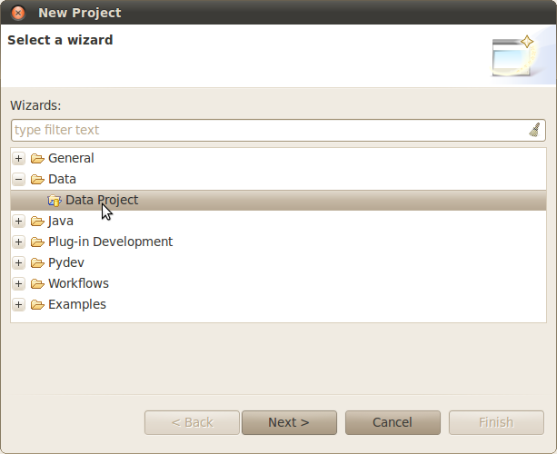
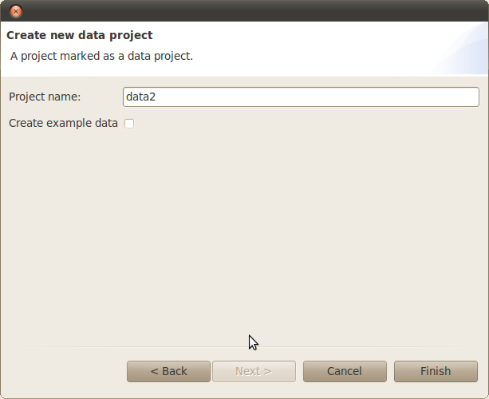

You may create many data projects in the workspace. These may reference data in different locations for combining in workflows later.
To create a new project follow these instructions:
Right click in the 'Project Explorer' and choose 'New->Project...'.
Choose the project type 'Data->Data Project'

Hit Next and then choose the project name and if you would like example data to be inserted.
